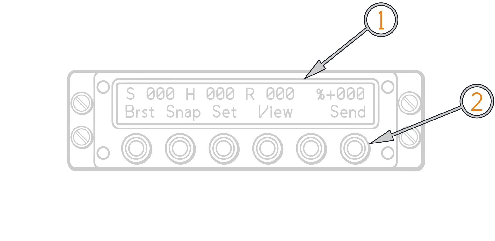
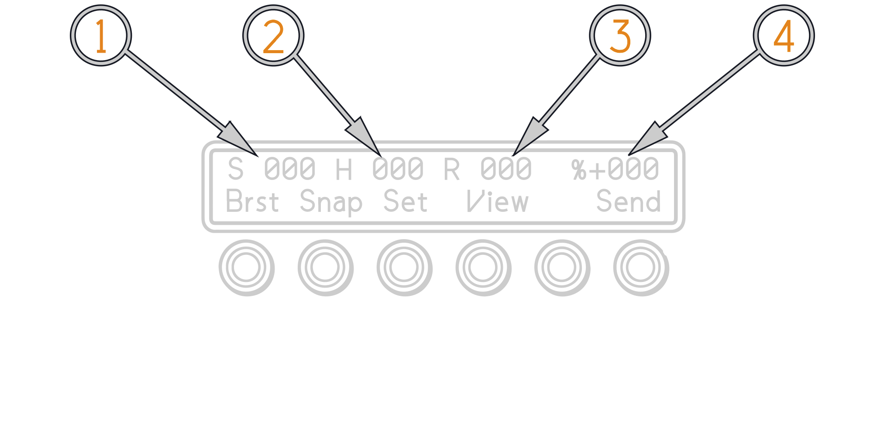

Fast Tactical Imaging System
The Tactical Imaging Set (also called FTI), captures, digitizes, and compresses imagery from an external video source, then stores and/or transmits it over a secure communications link.
The external video source is typically a camera/video system such as the nose mounted Television Camera System (TCS), Low Altitude Navigation and Targeting System for Night (LANTIRN), Head Up Display (HUD) camera. Maximum image capture rate is 4 images/second. In reality the Tactical Imaging Set could also receive images transmitted by other Tactical Imaging Sets or compatible systems (such as ground or base stations). Selected images can be displayed on the forward (Video Display Indicator−VDI) and/or aft (Programmable Tactical Information Display − PTID) cockpit display.
The Tactical Imaging Set consists of a Remote Control Unit (RCU), Image Transceiver, Video Tape Recorder (VTR). The RCU mounts in the aft cockpit at the outboard front of the right side console.
The Tactical Imaging System replaces large parts of the legacy AVTR system. The Image Transceiver, VTR, Interface Box, and cables are mechanically mounted as one unit, called the Naval Airborne Video Recorder and Image Transceiver (NAVGRIT) Unit, which is mounted the right side front fuselage avionics bay.

(
(
Remote Control Unit (RCU)
The RCU is used to control the Image transceiver mounted in the avionics bay. The RCU display contains 2 lines of 24 green, night vision compatible, alphanumeric characters each. The top line provides status and messages. The bottom line provides a command menu. The command menu defines the functions of six pushbutton switches located below the display. The command menu, and thus the switch functions, varies depending on the selected operating mode. Display brightness is controlled via menu selection.

Image Transceiver
The Image Transceiver also has two Personal Computer Memories Card International Association (PCMCIA) card slots. The Image Transceiver has 26 MB of image memory allocated for storage of uncompressed image frames. The image memory is volatile, and so stored image frames are lost when power is removed.
In DCS sent and received images are stored in the saved-games directory
Saved Games\DCS_F14\TIS For each flown mission where the VTR or FTI are used a
folder with that mission date is created. VTR recordings are stored with a time
stamp. FTI images are stored and named in order of which they are received.

Airborne Video Tape Recorder (AVTR)
The VTR is an airborne video recorder that can record and play back up to 2 hours of information on a standard Hi 8 format cassette tape. The legacy AVTR front panel controls are disabled with the exception of the record switch; thus all VTR control is remotely performed. The RCU duplicates the AVTR record function through the view menu shown below.
The AVTR can only record one display at a time. The displays are selected via the ECMD video menu which is accessed via the DDD cursor. The selected display is also the one that the FTI records for image sending.
ECMD Video Recording Menu

(
(
(
(
(
(
(
Note: ECMD Video Menu display selection is overridden by actuation of the LCP TCS/LTS video feed button.
OPERATING INSTRUCTIONS
Power-up Sequence
Power up is accomplished using the aft cockpit Sensor Control Panel, moving the record switch from OFF into standby will apply power. Once power is applied, the Remote Control Unit (RCU) controls all functions, with the exception of VTR record which is accomplished by moving the record switch into the ON position. VTR record can also be initiated through the RCU, overriding the Sensor Control Panel Record switch position.
Set aft cockpit Sensor Control Panel selector to STBY
RCU displays following sequence:
| PHOTOTELESIS |
| RCU 403 |
| Waiting ATR startup |
| Unit is |
| Waiting for ATR startup |
After Image Transceiver startup, the following message sequence appears
| RCU RESET |
| PHOTOTELESIS |
| RCU 403 |
Boot up menu appears

(
(
Press switch corresponding to desired display brightness level
(if current level is satisfactory, do not press a switch):
- EXT − Not used
- NITE − Nighttime level from Settings menus
- DAY − Daytime level from Settings menus
- Press OK switch. Main menu appears at currently selected brightness level.

(
(
(
(
SETTINGS MENUS
The Settings menus are used to modify configuration parameters for capturing, compressing, transmitting, and receiving image frames, as well as other system level functions. The Settings menus are accessed and processed in sequence from the Main menu (by pressing the SET switch) as shown above.
Settings Menus' Format
The Settings menus follow the general format:
| Parameter: ###### |
| End BackSet Fld PrevNext |
Where ####### (flashing) is the value of the parameter being set. Switch functions vary somewhat among menus, and are explained as each menu is described.
Send to Call Sign Menu
This menu is used to select/deselect the call signs to be included in the next transmission. It provides access to submenus, which are used to maintain the call sign directory. The menu contains one value field. When selected, the first call sign in the directory is listed whether or not it is selected for transmission. The directory can be stepped through using the NEXT switch, and each entry can be selected or deselected, as desired. The displays for a call sign value differ slightly depending on whether that value is selected or not selected.
For a selected call sign value:
For a non−selected call sign value:

END − Return to Main menu
MOD − Display Modify Call Sign menu
SET − Select next menu in sequence
YES − Select call sign
NO − Deselect call sign
NEXT − Change currently displayed call sign to next call sign in directory
The callsign directory can be edited using the TIS DTM menu in the mission editor.
Modify Call Sign Menu
This menu is used to add a new call sign to the directory or delete an existing call sign from the directory. It also provides access to the Edit Call Sign menu, which is used to define a newly added call sign.

DONE −Return to Send to Call Sign menu
DEL − Delete the current call sign from the directory and display the next value (if no next value, default is 000000)
NEW − Create new unselected call sign with value of 000000 (if value 000000 already exists, switch has no effect)
EDIT − Display Edit Call Sign menu
PREV − Change currently displayed call sign to previous call sign in directory
NEXT − Change currently displayed call sign to next call sign in directory
Edit Call Sign Menu
This menu is used to change the name of an existing call sign, including a newly added call sign (000000). Each character in the call sign is considered a separate value field. Valid entries for each character are numerals, upper case letters, and blanks (, located in sequence between Z and 0). Blanks are not permitted within the body of the call sign; however, if a call sign has less than 6 characters, trailing blanks must be added to complete the 6 character call sign. Trailing blanks appear on the display only when the call sign value field is being edited.
OK − Return to Modify Send to Call Sign menu
FLD − Select next field in call sign
PREV − Change currently selected call sign character to previous letter or number
NEXT − Change currently selected call sign character to next letter or number
Local Call Sign Menu
This menu is used to modify the call sign associated with the Tactical Imaging Set. Each character in the call sign is considered a separate value field. Valid entries for each character are numerals, upper case letters, and blanks (4, located in sequence between Z and 0). Blanks are not permitted within the body of the call sign; however, if the call sign has less than 6 characters, trailing blanks must be added to complete the 6 character call sign. Trailing blanks appear on the display only when the call sign value field is being edited.

END − Return to Main menu
BACK− Display PTAC Quick Start menu
SET − Display Brightness menu
FLD − Select next field in call sign
PREV − Change currently selected call sign character to previous letter or number
NEXT − Change currently selected call sign character to next letter or number
Send/Delete Function Menu
This menu is used to toggle the send/delete mode parameter on or off. In send/delete mode, captured images are deleted as they are sent. With send/delete mode turned off, images are copied to the receive queue as they are sent. Valid values are YES and NO.
END − Return to Main menu
BACK− Display Send−to Call Sign menu
SET − Display Capture Rate menu
NEXT − Toggle send and delete mode value
Capture Rate Menu
This menu is used to change the time interval between image captures in burst mode. Valid values range from 0.1 to 999.0. Values are incremented or decremented in 0.1−second steps when the value is less than 1 second, and in 1−second steps when the value is greater than 1 second. Incrementing once from 999.0 or decrementing once from 0.1 disables burst mode and enables single shot mode. In this case, the value field indicates SINGLESHOT.
The capture rate can be set to 0.1 or 0.2 seconds/image; however, these settings are below the Tactical Imaging Set minimum capture rate value (fastest capture). If the capture rate is set to 0.1 or 0.2 seconds/image, the Tactical Imaging Set will capture image frames at its fastest speed, which is approximately 0.28 second/image in capture/hold mode. In capture/send mode, the minimum capture rate value is substantially higher due to the compression required to transfer image frames to the send queue.
END − Return to Main menu
BACK − Display Send/Delete menu
SET − Display Capture Time menu
PREV − Decrement currently displayed
NEXT − Increment currently displayed value
Capture Time Menu
This menu is used to change the duration of image captures in burst mode. Valid values range from 001 to 999. Values are incremented or decremented in 1−second steps. Incrementing once from 999 or decrementing once from 001 selects continuous capturing. In this case, the value field indicates CONTINUOUS.
END − Return to Main menu
BACK − Display Capture Rate menu
SET − Display Max Key Time menu
PREV − Decrement currently displayed value
NEXT − Increment currently displayed value
Display Brightness Menu
This menu is used to set RCU display brightness level for daytime or nighttime viewing, Valid values are EXTERNAL (not used), DAY, and NIGHT.

END − Return to Main menu
BACK − Display Local Call Sign menu
SET − Display Image Dimension menu
DIM − Decrease brightness of display for selected DAY or NIGHT value
BRT − Increase brightness of display for selected DAY or NIGHT value
NEXT − Change currently selected brightness value to next value
Format SRAM Card Menu
This menu is used to format the Image card (also called the Static Random Access Memory (SRAM) card) used to store the image frames in the send and receive queues. Valid values are YES and NO (NO is default).
END − Return to Main menu
BACK − Display Date and Time menu
SET − Display View Version Number menu
FMT − Format Image card if format value is YES (if format value is NO, this switch has no effect)
NEXT − Toggle format yes/no value
Formatting an Image card causes all stored image frames in the send and receive queues to be deleted and the display to momentarily read:
| Dumping SEND & RECV |
When all images are deleted, the display momentarily changes to read:
| Formatting SRAM card |
CAPTURING/COMPRESSING/SAVING/TRANSMITTING/RECEIVING IMAGES
Capturing Images
Image frames are captured in either burst mode or snap mode. In burst mode, image frames are captured at predetermined intervals for a predetermined length of time. In snap (single shot) mode, a single image frame is captured. The captured image frames are then either transmitted immediately (capture/send mode) or stored in the image buffer/hold queue (capture/hold mode). All modes and parameters are set using the Settings menu.
Capturing Images in Burst/Hold Mode
Note If the specified capture rate is SINGLESHOT, the BRST switch label does not appear.
-
From the Main menu, press the BRST switch. The capture sequence proceeds automatically with image frames being captured at the specified rate for the specified duration (capture time).
-
While the image frames are being captured, the menu appears as follows:
-
The hold queue field (H012) increases by 1 as each image frame is captured.
Note If the hold queue is full (typically 188 image frames), burst mode is discontinued automatically.
Burst length and Burst interval are changed in the settings menu.
Capturing Images in Snap Mode
From the Main menu, press the SNAP switch. The capture sequence proceeds automatically with one image frame being captured. The Main menu remains unchanged, except that the hold queue field H012 increases by 1.
Saving Images
In capture/hold mode when no call signs are selected for transmission and reception is not occurring, all captured− but−not−compressed image frames in the hold queue can be compressed and stored in the send queue. In this situation, the following menu appears:
Pressing the SEND switch transfers one image at a time from the send que (S002) into the Image card.
🚧 Work In Progress.
Transmitting Images
Image frames which have been captured and compressed are send using the SEND switch on the Main menu. The SEND switch appears when the Tactical Imaging Set is not currently transmitting or receiving image frames, there is at least one image frame in the send and/or hold queue, and at least one send−to call sign is selected. New image frames can be captured during transmission. Transmission of image frames on command is accomplished as follows:
Note The Tactical Imaging Set transmits image frames to all selected call signs, but it does so sequentially, that is, it transmits all image frames to the first selected call sign.
-
On the Main menu, press the view key the following menu appears:

-
In the view menu press the Hold key, the cockpit display will now display the images captured in the hold cue and the following menu appears: Within the hold menu scroll to the image or images that are to be transferred to the send cue. With the MARK key images are transferred into the send cue.
-
On the Main menu, press the SEND switch. The Tactical Imaging Set automatically shifts into data mode, and the following menu appears:
a. If there are image frames in the send queue with a valid callsign selected in the settings menu, those image frames are transmitted.
b. If there are no images in the send cue, the send switch stores all images in the Hold cue on the image card.
c. The S=00% displays to the aircrew the percentage of transmitted data successfully received by the receiving station.
Receiving Images
Image reception is normally accomplished after coordinating voice communication with the transmitting station. Image reception cannot occur during transmission, and the Image card must have sufficient memory available to store the received images. Reception is initiated when a transmission to a call sign matching the local call sign is received. The local call sign is set using the Settings menu. Once reception is initiated, it proceeds until complete with no user intervention. When reception is complete, the Tactical Imaging Set sends an acknowledgement to the sending station, and the Main menu appears on the RCU.
-
Ensure that the transmitting station has the correct receiver callsign set in the settings menu. By default the unit name is used as the callsign. The local callsign can be changed in the settings menu. All callsigns of a group are stored by default. Callsigns can als be pre programmed via the DTM in the mission editor TIS menu.
-
When reception begins, the following menu appears with the R000 field flashing:

-
Once images have been received the R002 menu will show the amount of images received. For example R002. These images can be viewed via the view/send menu described below.
VIEWING IMAGES
Images available for viewing are captured image frames in the hold queue, captured, marked, or sent image frames in the send queue, received, sent, or uploaded image frames in the receive queue, and live/playback VTR output. When no viewing option is selected, Television Camera System (TCS) output is displayed on the cockpit display. Image frames in the hold, send, and/or receive queue can also be deleted. All functions are accomplished using the View menu.
-
Pressing the VIEW switch on the Main menu accesses the View menu.
-
From the View menu, press the SEND switch. The View Send menu sequence appears as follows, and the first image frame in the queue is decompressed and appears on the cockpit display:

(Progress bar indicating status of decompression)
Switch functions are as follows:
END − Return to Main menu
DEL − Delete current image frame
PREV − Display next image frame in queue
NEXT − Display previous image frame in queue
b. Press the PREV or NEXT switch until the desired image frame is displayed
The decompressed image appears on the cockpit display. The number of the image frame displayed is its position in the queue. This position is based on the image frames assigned image code (time code for FTI−captured image frames, externally assigned for received and previously loaded image frames). The queue wraps around so that the image frame selected by pressing the NEXT switch when viewing the last image frame in the queue is image frame number 1, and the image frame selected by pressing the PREV switch when viewing image frame number 1 is the last image frame in the queue.
CONTROLLING VTR FUNCTIONS
The VTR can be controlled from either the RCU or the aft cockpit Sensor Control Panel, with the Sensor Control Panel taking precedence. When the Sensor Control Panel RECORD switch is set to OFF, power is removed from the Tactical Imaging Set, and the VTR tape is unthreaded. When the Sensor Control Panel RECORD switch is set to RECD, the VTR is commanded to record. When the Sensor Control Panel is set to STBY (normal situation), the VTR is commanded to perform the function set by the RCU. In either case, the Sensor Control Panel indicator lights indicate standby, end of tape (EOT), or unthreaded VTR status, as applicable. In practice, it is recommended that if the Sensor Control Panel is used to control the VTR record function, the RCU have STBY selected. If the RCU is used to control the VTR functions, the Sensor Control Panel selector must be set to STBY.
-
VTR control functions are part of the Tactical Imaging Set view functions The View menu is accessed by pressing the VIEW switch on the Main menu. The View menu appears as follows:

- END − Return to Main menu
- REC − Set VTR to record function
-
Once the VTR is set to record an event mark switch appears on the RCU panel. The VTR recording time is also displayed.